山歩きの記録
山頂に着くと、なぜか両手を上げてしまう。誰に頼まれたわけでもないのに。
写真アプリの中から、日帰りで歩いた山の日を探し出して、ここに並べてみた。丹沢、箱根、湘南の低い尾根、三浦と房総の小さな山。たいていは妻と二人で、ときどき息子も一緒だった。高い山はほとんどない。でも、どの日の写真にも、ちゃんとその日の空が写っている。新しい山行から順に並べている。
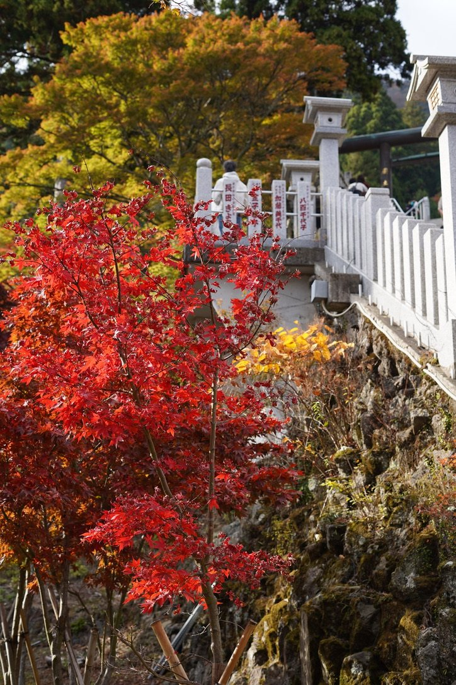
2025年11月15日（土）大山ケーブルと、紅葉の大山寺
伊勢原 大山ケーブル → 大山寺 → 阿夫利神社
十一月の大山。ケーブルカーの駅、真っ赤なもみじの石段、赤い前掛けの小さなお地蔵さん。
記録を読む →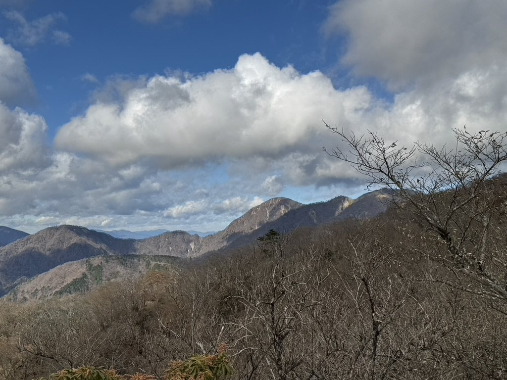
2024年12月7日（土）紅葉のトンネルを抜けて、塔ノ岳
丹沢 秦野 → 塔ノ岳
麓の燃えるような紅葉から、冬枯れの稜線をたどって塔ノ岳の山頂へ。
記録を読む →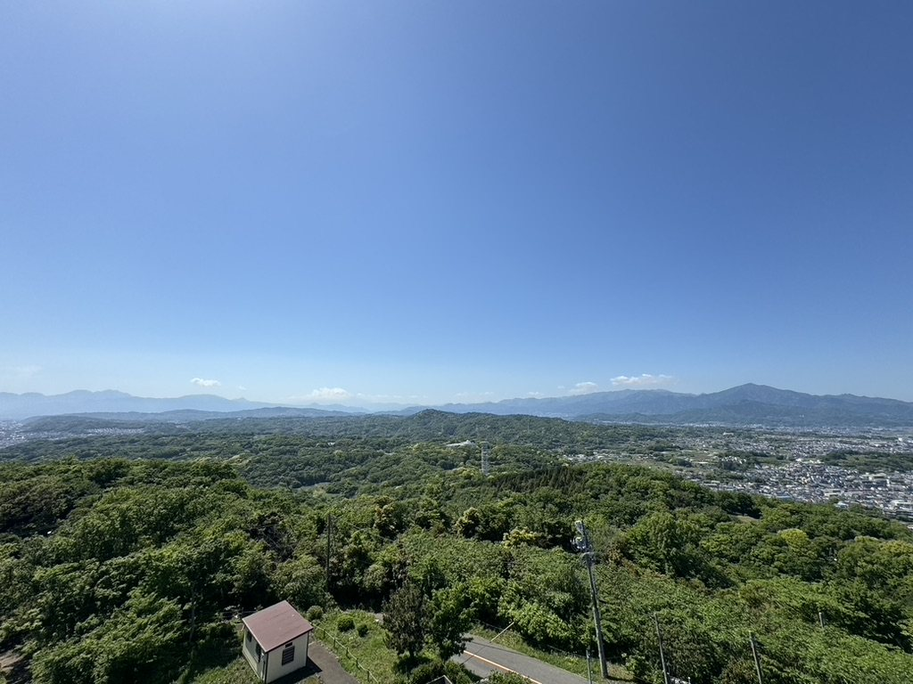
2024年5月3日（金）五月の湘南平、バラと海
平塚・大磯 高麗山公園（湘南平）
憲法記念日の湘南平。満開のバラ園から坂を上がって、展望台で海の風に吹かれた。
記録を読む →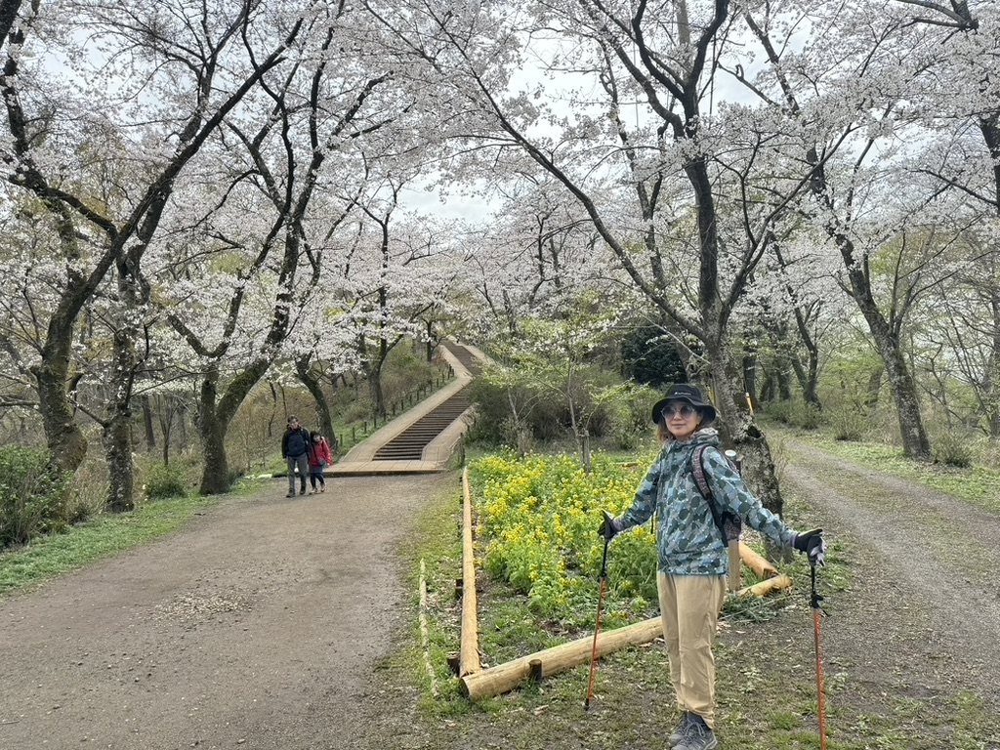
2024年4月6日（土）弘法山、桜のトンネル
秦野 権現山 → 弘法山 → 川沿いの桜並木
満開の桜と菜の花とツツジ。季節が少し渋滞していた、秦野の花見ハイキング。
記録を読む →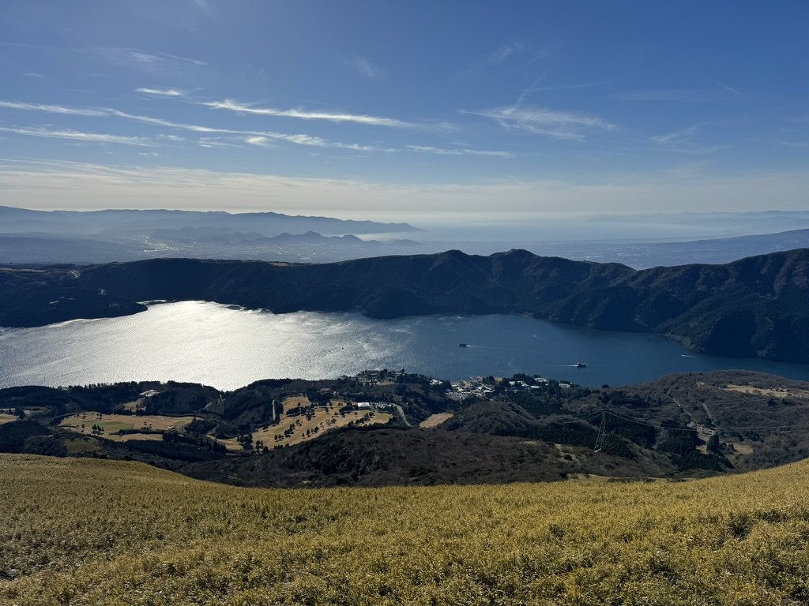
2023年12月9日（土）駒ヶ岳の上の、冬の青
箱根 箱根園 → 駒ヶ岳 → 芦ノ湖
雲ひとつない十二月、駒ヶ岳の草原から富士山と芦ノ湖を見下ろした。
記録を読む →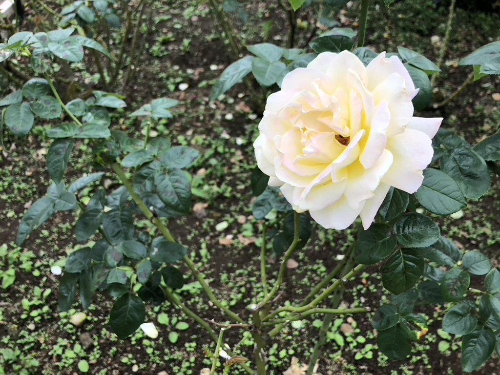
2022年10月22日（土）秋のバラと、森の流木の動物たち
平塚・大磯 花菜ガーデン → 高麗山
ハロウィンの花菜ガーデンで秋のバラを見て、大磯の森で流木の馬に出会った。
記録を読む →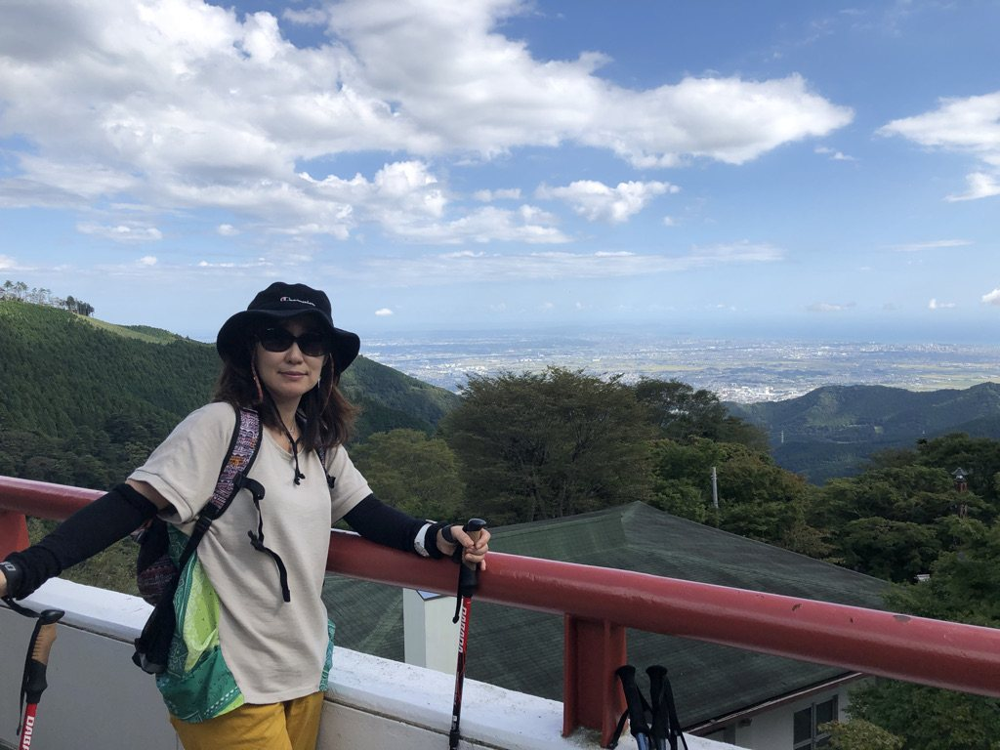
2021年10月2日（土）日向の森から、大山の中腹へ
伊勢原 日向ふれあいの森 → 大山
大山の東側、日向の森から。細い滝、相模平野の見晴らし、注連縄の大杉。
記録を読む →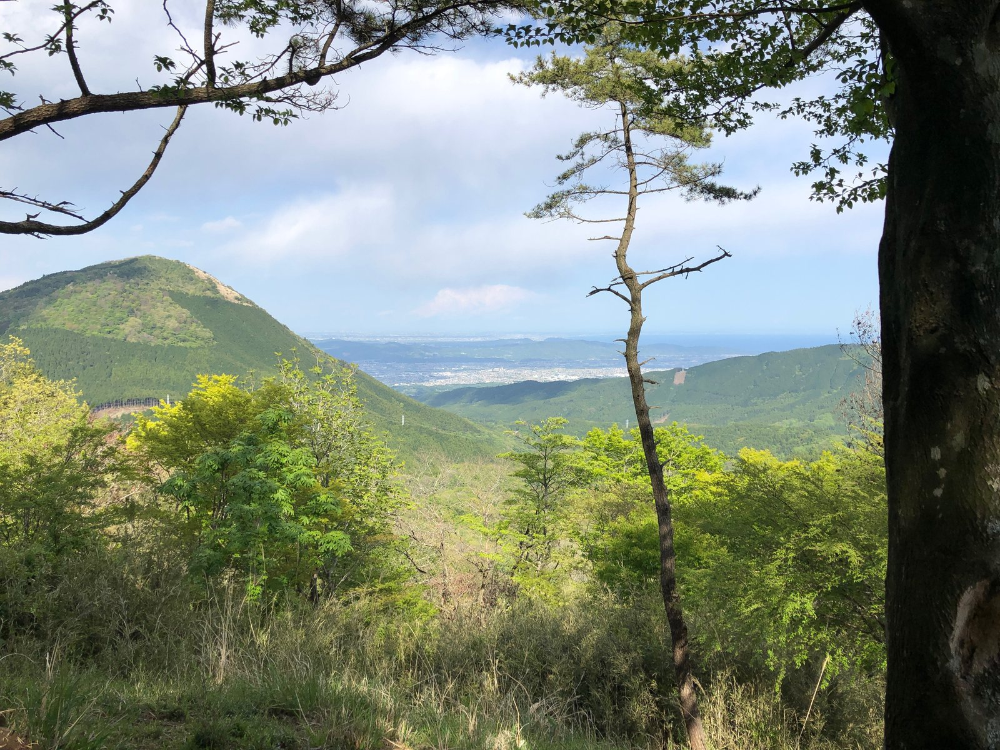
2021年5月3日（月）足柄峠と、夕日の滝
南足柄・小山町 足柄峠 → 夕日の滝
ゴールデンウィークの午後、古い峠の石碑をめぐり、新緑の中の細く長い滝へ。
記録を読む →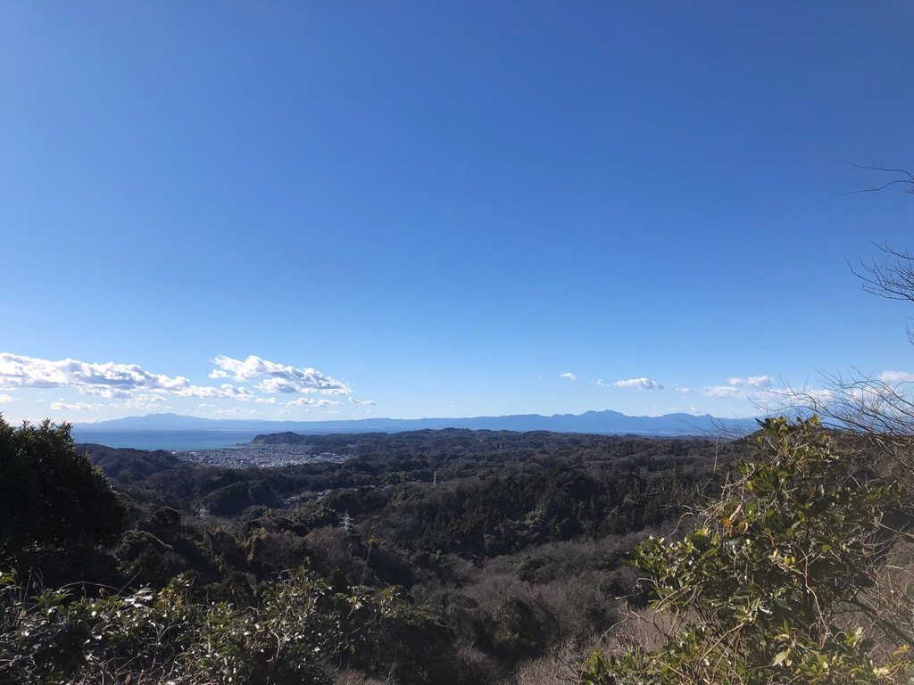
2020年12月31日（木）大晦日、鎌倉の尾根道
鎌倉 二階堂 → 天園 → 鶴岡八幡宮
二〇二〇年の最後の日、鎌倉の谷戸から尾根へ上がり、八幡さまへ下りた。
記録を読む →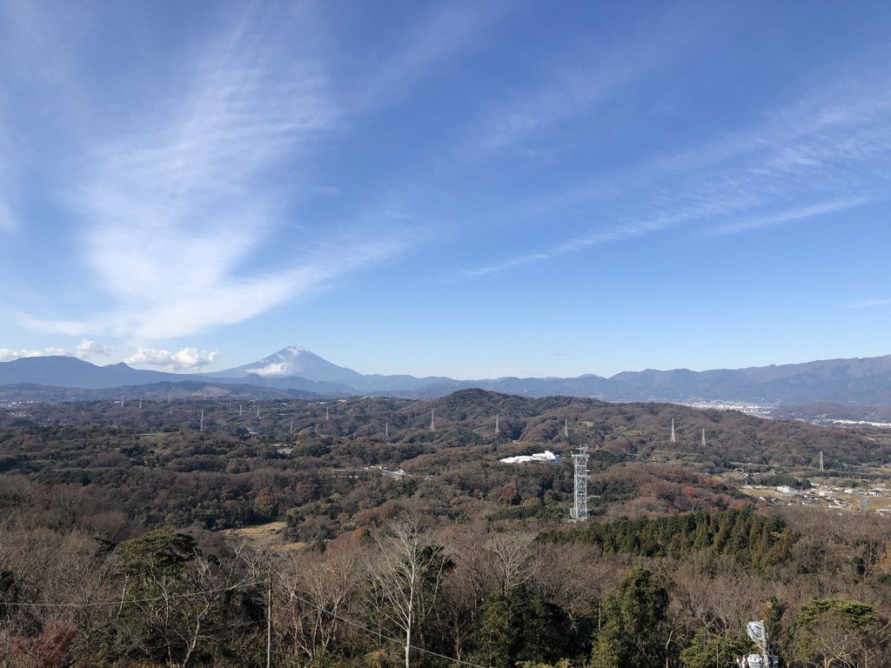
2020年12月20日（日）高麗山と湘南平、冬晴れの尾根
大磯・平塚 高麗山 → 浅間山 → 湘南平
冬晴れの日曜日、富士山と相模湾を両側に見ながら、大磯の低い尾根を歩いた。
記録を読む →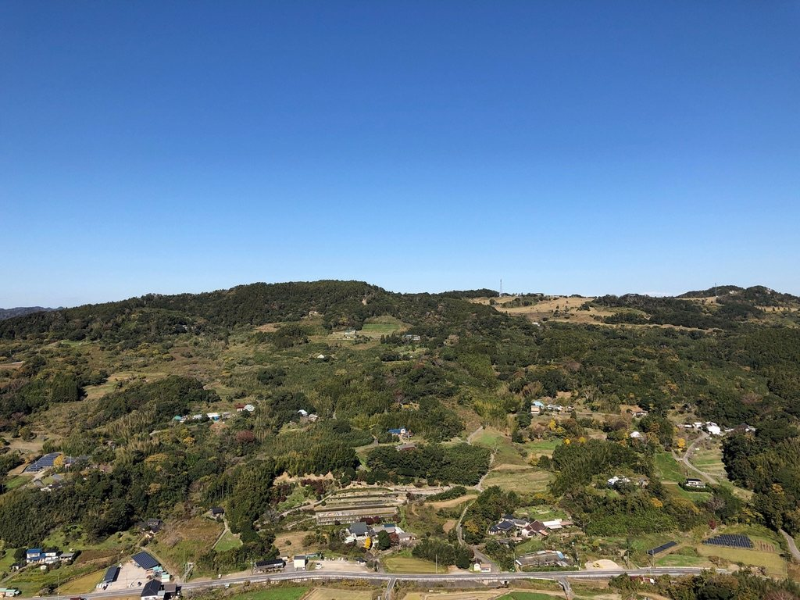
2020年11月21日（土）房総の低い山、鷹取山
南房総 御殿山遊歩道 → 鷹取山
三連休の初日、南房総の御殿山遊歩道へ。里の近い、低くてやさしい山。
記録を読む →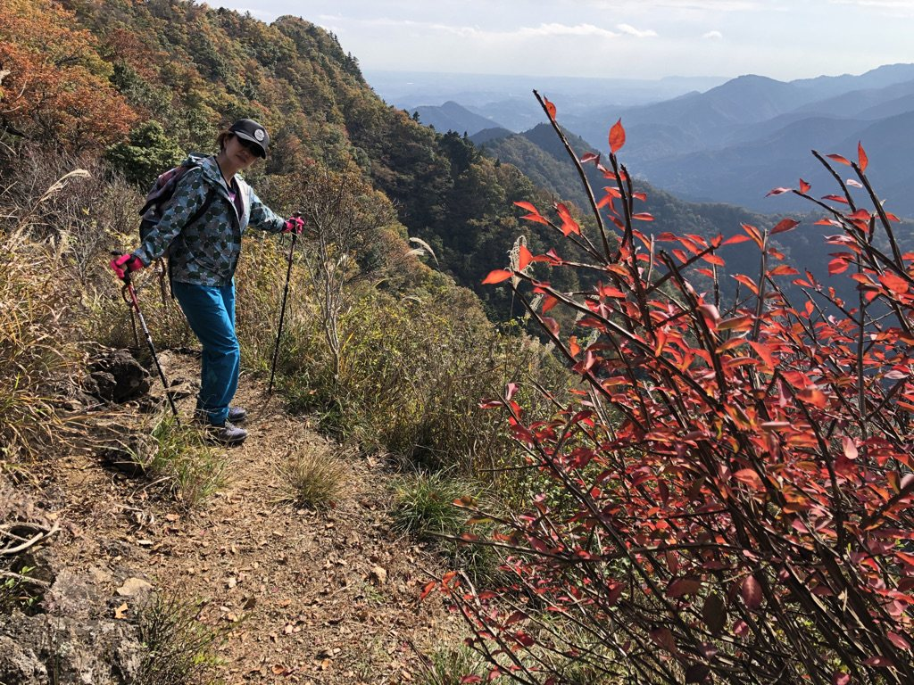
2020年11月8日（日）革籠石山の、赤い尾根
宮ヶ瀬湖の南 愛川町・清川村の尾根 → 革籠石山
宮ヶ瀬湖の近くの尾根を歩き、読めそうで読めない名前の山、革籠石山へ。
記録を読む → 2020年11月1日（日）
2020年11月1日（日）鍋割山の、鍋焼きうどん
丹沢 大倉 → 二俣 → 鍋割山
家族三人で大倉から鍋割山へ。山頂の小屋で鍋焼きうどん、その向こうに富士山。
記録を読む →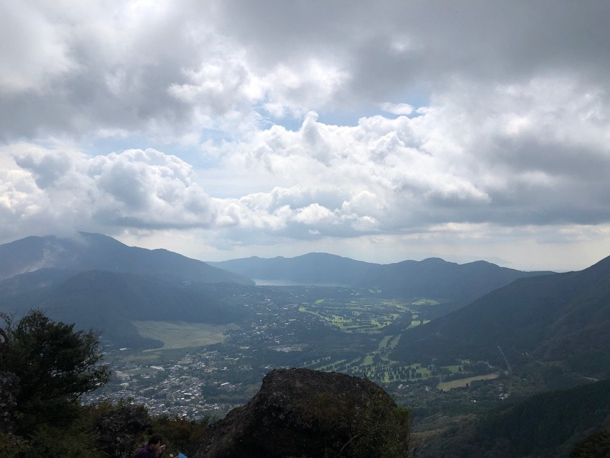
2020年10月3日（土）金時山から、乙女峠へ
箱根 公時神社 → 金時山 → 乙女峠
金太郎の山を急登で上がり、仙石原を見下ろして乙女峠へ下った曇りの一日。
記録を読む →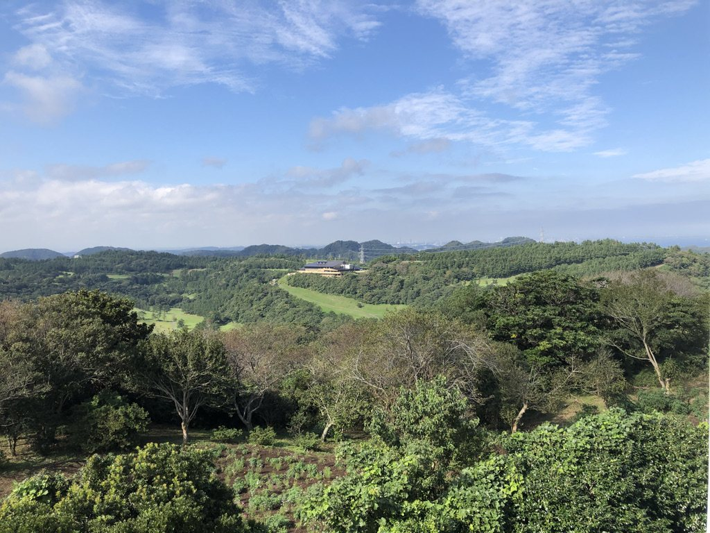
2020年9月27日（日）川をさかのぼって、三浦半島のてっぺんへ
横須賀 前田川遊歩道 → 大楠山
秋谷の海辺から川の中の飛び石を渡り、三浦半島でいちばん高い大楠山へ。
記録を読む →